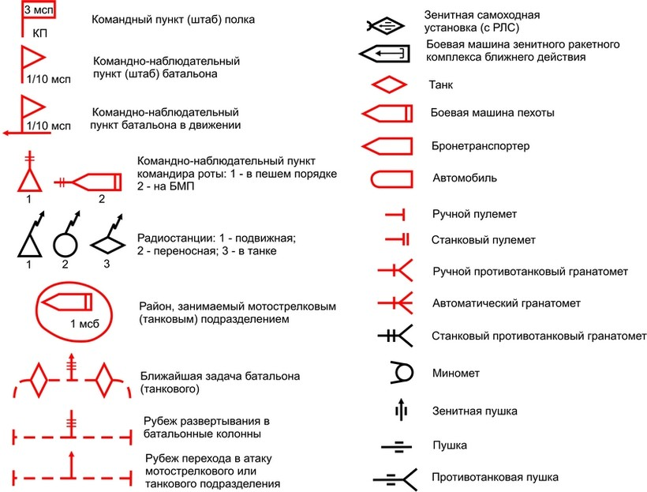
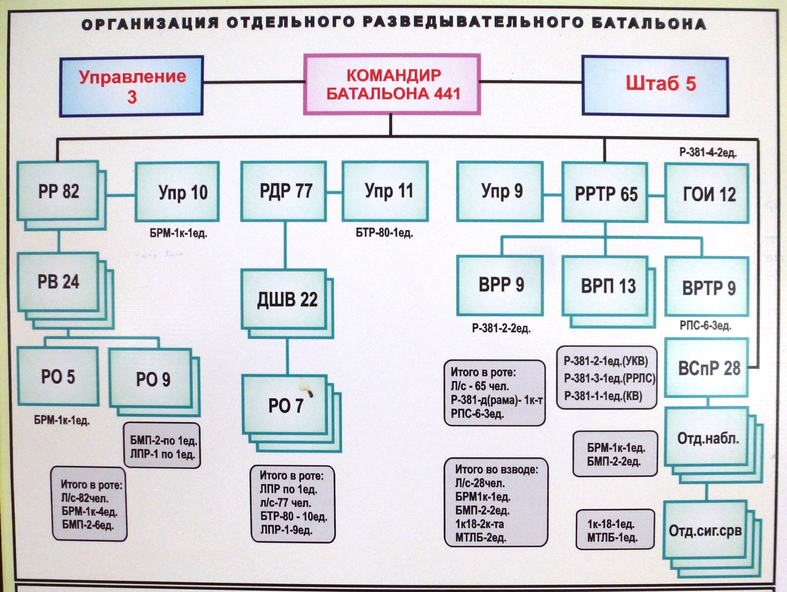
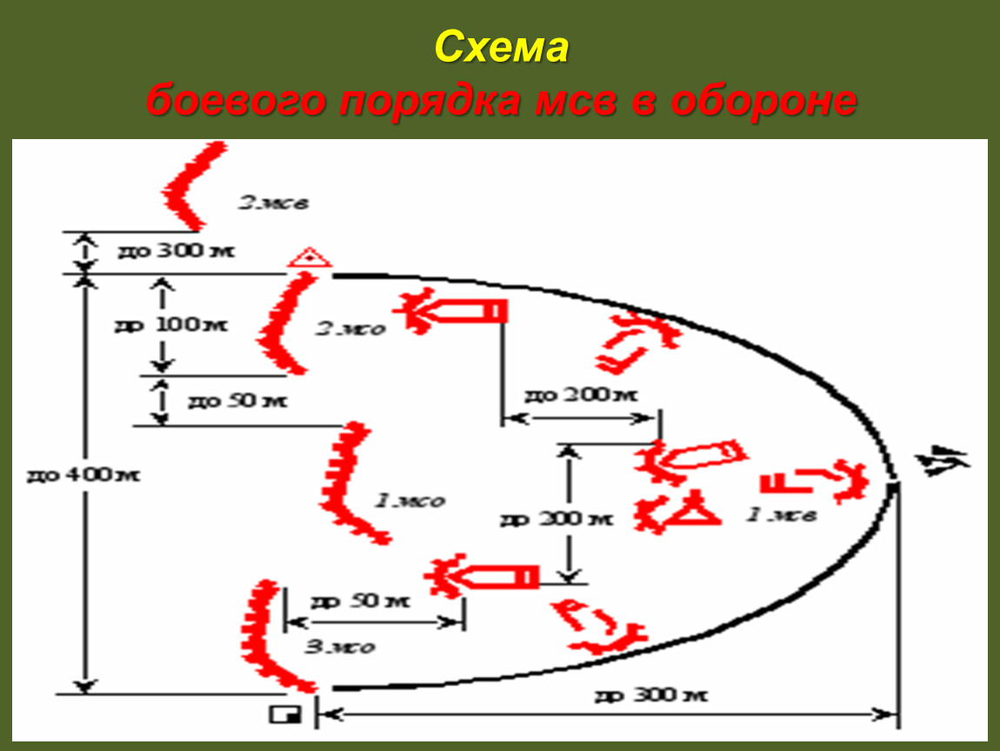

Military Lessons
Уроки ТТП, ГИС, ОВУ, ОВЗ
Топографические знаки для обозначения на карте
Выделены самые важные
Готовые рубежные контроли с ответами на вопросы
Материалы и данные взяты из военной кафедры AITU, со всеми вопросами и сессиями которые встретятся есть ответы. вниз.
Строение
ОШС МБП Армии Казахстана"
ТТП
Схема мсв в обороне
Нажмите ESC чтобы увидеть миниатюры слайдов.
Красивые переходы
Вы можете выбрать переход на свой вкус:
Cube -
Page -
Concave -
Zoom -
Linear -
Fade -
None -
Default
Темы оформления
Reveal.js поддерживает следующие стили:
Default -
Sky -
Beige -
Simple -
Serif -
Night
Moon -
Solarized
Оставьте свои комментарии тут
$(window).load( function() {
$("#endpage-box").endpage_box({
animation: "fade",
from: "50%",
to: "110%",
content: "Добавьте свое сообщение сюда."
});
});
Переходы между слайдами
Вы можете обратиться к определенному слайду, сюда.
Пауза
На клавиатуре нажмите клавишу "b" чтобы перейти в режим "паузы". Эта функция очень полезна если вы хотите взять паузу при длинной презентации.